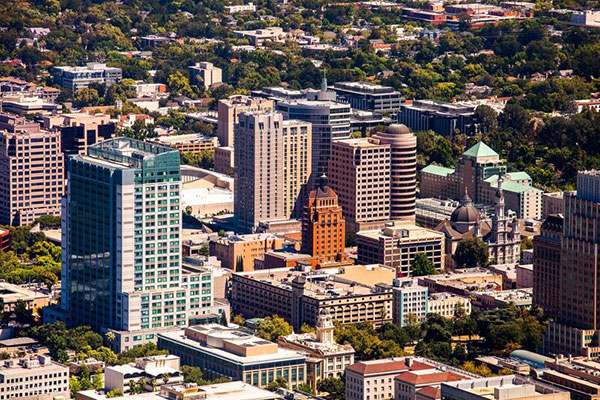

Sacramento Population
Sacramento's population is diverse and growing, reflecting a rich blend of ethnicities and cultures. With over half a million residents, it is the fastest-growing major city in California. This vibrant demographic contributes to a multicultural community that influences the city's cuisine, arts, and social life. The population includes families, students, young professionals, and retirees, creating a dynamic urban environment that celebrates its historical roots while embracing modern innovation and global influences.

Sacramento from the Begining
Sacramento was incorporated as a city in 1850, during the height of the California Gold Rush. It became California's first chartered city, solidifying its role as a pivotal commercial and transportation hub in the region before being designated the state capital in 1854.

Where is Sacramento?
Sacramento is situated in the northern portion of California's Central Valley, a fertile and expansive region bordered by the Sierra Nevada to the east and the Coastal Range to the west. The city lies at the confluence of the Sacramento and American Rivers, providing access to waterways and contributing to its agricultural prominence. This location affords Sacramento a Mediterranean climate, with hot, dry summers and mild, wet winters, making it ideal for outdoor activities and farming. The region also serves as a gateway to the Sierra Nevada foothills and nearby wine country.

Sacramento's Vibe
Sacramento is classified as a charter city, which means it operates under its own city charter rather than adhering strictly to state statutes. This classification grants Sacramento a degree of autonomy in managing its municipal affairs, allowing the city government to set policies and rules that best suit the needs of its residents.

Income of Sacramento
The average income in Sacramento reflects the city's diverse economy. As of recent estimates, the median household income is approximately $70,000, though this figure varies based on occupation, education, and neighborhood. While some sectors like government, healthcare, and technology offer higher-paying jobs, the cost of living has also been rising, influenced by housing market dynamics and regional economic trends.